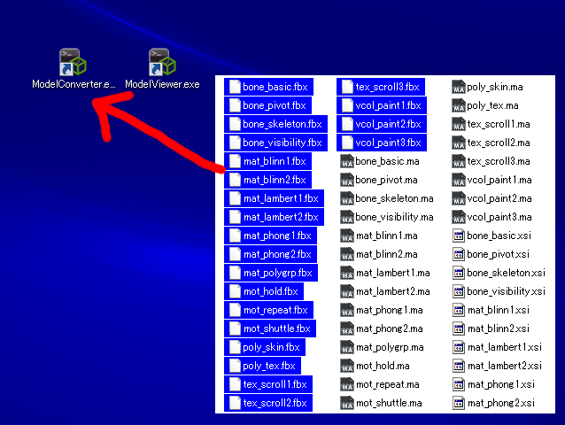
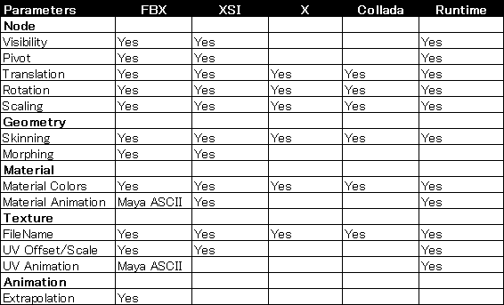

Sce.PlayStation.HighLevel.Model provides a basic model display feature.
Contents
BasicModel is a class which indicates basic model data and is created by loading a file storing the model data.
BasicModel has the API of world matrix settings, current motion settings, animation calculation, matrix calculation, graphics rendering, etc., and by calling these a model can be displayed.
The extension of model files is .mdx and is binary format converted from general model data such as FBX XSI X COLLADA. Information such as hierarchy, shape data, materials, textures, and animation is stored in a model file.
BasicProgram is a class representing a basic shader program and can apply basic effects such as lighting, fog, and skinning.
BasicProgram has parameters such as matrices, materials, lights, fog, rendering modes, etc., and the shader feature can be controlled by setting these parameters.
A shader file is loaded automatically according to the set parameters. Therefore, all of the shader files required by BasicProgram must be copied to the application directory.
BasicParameters is a class that manages the parameters of BasicProgram, and the aforementioned parameters are stored in this class.
A BasicProgram has one BasicParameters, but multiple BasicProgram can share one BasicParameters. This is useful for global parameter settings such as cameras and lights.
BasicProgramContainer is a class that manages already loaded programs and can register programs to the dictionaries that use character strings as keys.
After loading a model, this class is used to link programs to the model. Through this, appropriate programs according to the character string keys can be applied to a model, or an already loaded program can share multiple models.
BasicTextureContainer is a class that manages already loaded textures and can register textures to the dictionaries that use character strings as keys.
After loading a model, this class is used to link textures to the model. Through this, appropriate textures according to the character string keys can be applied to a model, or an already loaded texture can share multiple models.
ModelConverter and ModelViewer are in the following folder.
%SCE_PSM_SDK%/tools/ModelConverter
Create a shortcut for ModelConverter and ModelViewer on the desktop.
Dragging and dropping the output file to ModelConverter creates an output file in the same folder.

Dragging and dropping the output file to ModelViewer enables display of the model data.
When the model is converted, if a texture image file exists, it is read and stored in the output file.
The image file is searched for not only in the folder with the texture filename described in the input model file but also in the folder where the input model file exists. The extension of the image file is selected automatically from PNG, JPG, BMP, GIF, and other possible extensions, regardless of the extension of the texture filename specified in the input model file.
Dragging and dropping while pressing the Ctrl key displays a prompt and enables key input.
The following options can be specified.
You can use the following file formats.
The test data is in the following folder.
%SCE_PSM_SDK%/tools/ModelConverter/testdata
The model parameters that can be converted are as follows.

The parameter that says "Maya ASCII" can be obtained from the Maya ASCII file in the same folder.
Details on model file formats are described in the following page.
PlayStation(R)Mobile MDX File Formats